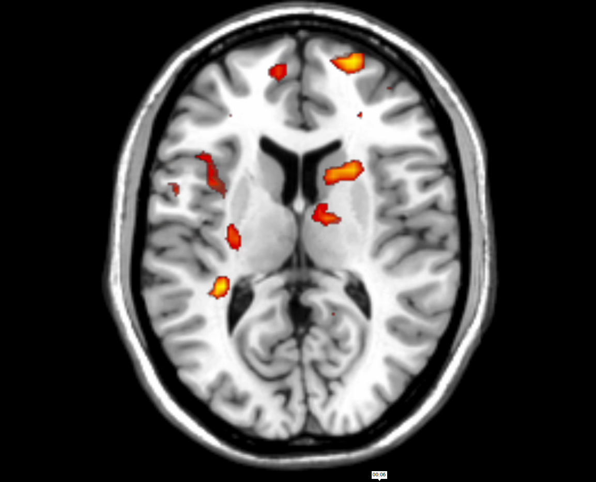
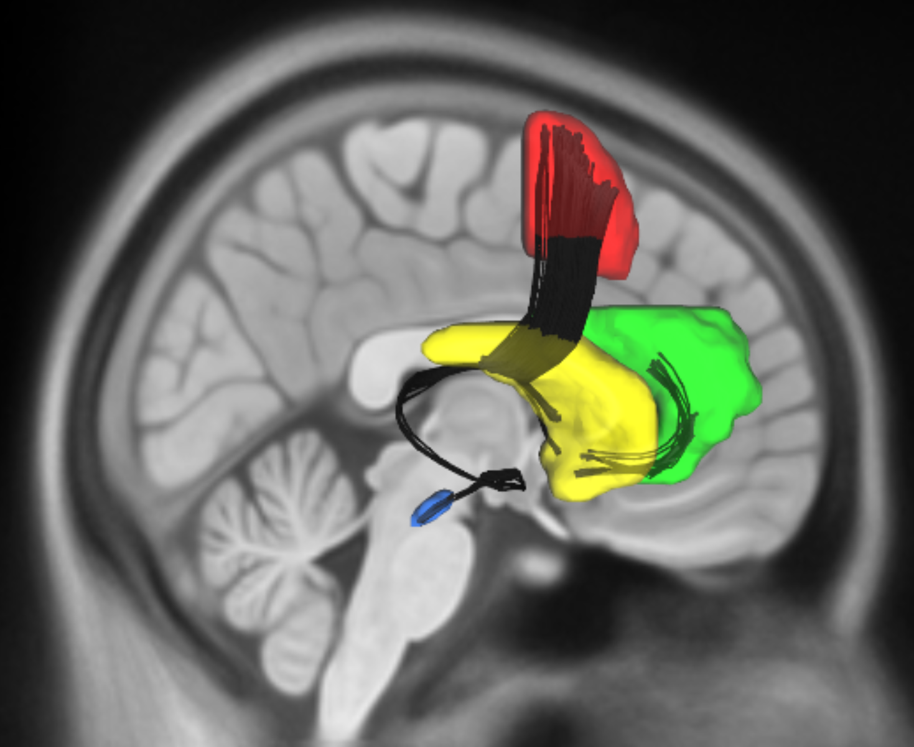
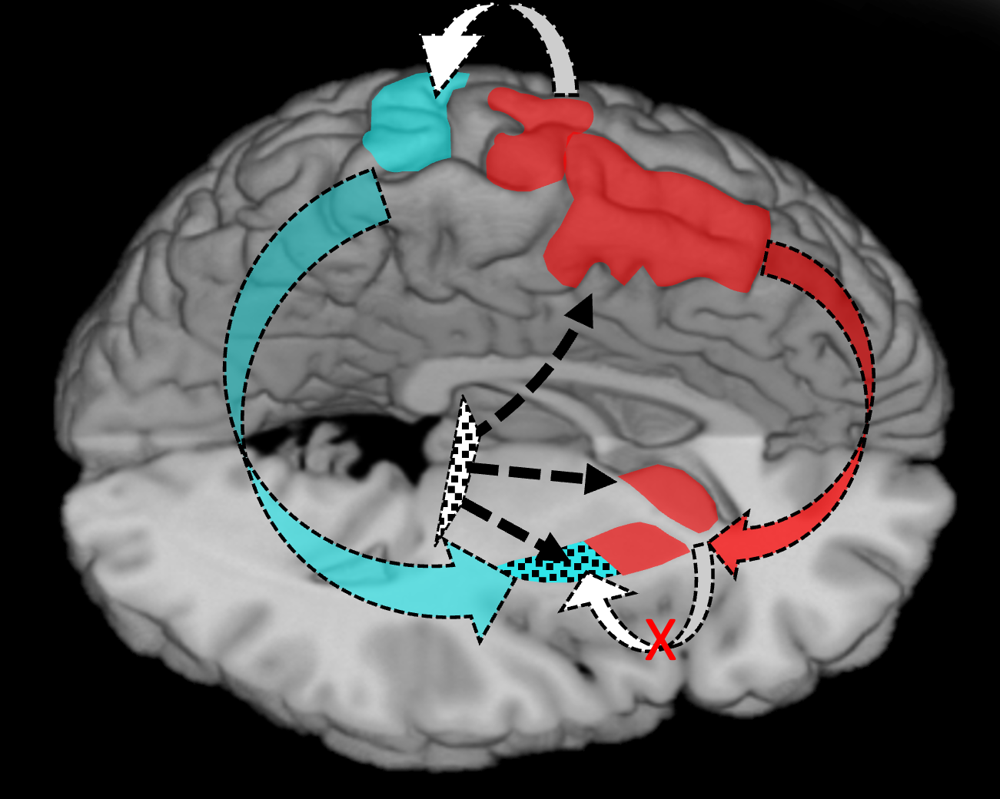

How does the brain automate actions across different systems (motor, emotional, physiological)? And how is habitual control affected by conditions like Parkinson's disease, where dopamine loss can disrupt everyday behaviors (e.g., writing)? Our goal is to understand the neural processes behind habitual actions and what happens when they break down.
We look at how key regions (e.g., prefrontal cortex, striatum) support self-regulation, especially under the influence of reward and emotion. We also develop models to understand how people learn and control stimulus-response associations, and examine cases where cognitive control fails, such as in impulsivity and brain lesions.
In disorders like addiction and impulsivity, habitual actions and cognitive control go awry, leading to excessive or compulsive behaviors. Focusing on addiction, impulse control disorders, and Parkinson's disease, we aim to uncover the neural changes that drive these behaviors and explore new treatment strategies.


